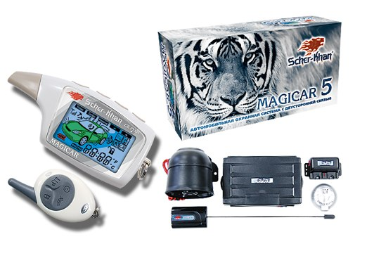
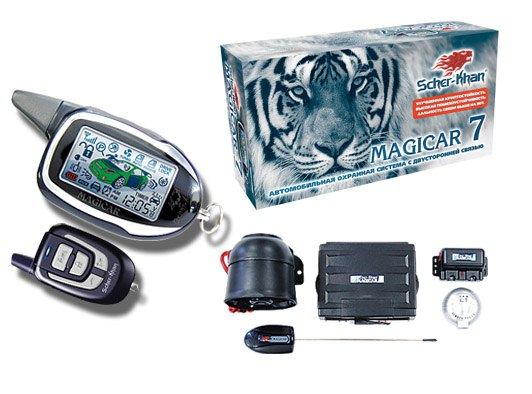

Основные различия между системами Scher-Khan Magicar 5 от Scher-Khan Magicar 7
1. Подключение. Magicar 5 – нет входов для контроля состояния педали тормоза и стояночного тормоза, а Magicar 7 – есть. Magicar 7 – педаль тормоза - это зона охраны, то есть при нажатии на тормоз в охране система перейдёт в тревогу. А ручник система Magicar 7 контролирует c запуска, если его выключить, система выключит двигатель – нет включенного ручника, нет запуска.
2. Радиоканалы. Magicar 5 – дальность связи до 1500 метров, система кодирования Magic Code. Magicar 7 – дальность связи до 2000 метров, система кодирования Magic Code PRO 2.
3. По разным сигналам контролируется факт запущенного двигателя. Magicar 5 - датчик шума и генератора, Magicar 7 – датчики генератора, тахометра и напряжения.
4. Разница в брелоках. Magicar 5 – при записи брелоков в память системы брелоки дописываются в память, не удаляя предыдущие. Всего 3 ячейки памяти и при заполнении их всех брелок прописывается вместо 1-го записанного. Чтобы система забыла предыдущие брелоки, нужно прописать в систему один брелок 3 раза.
В Magicar 7 – при начале прописывания брелоков предыдущие из памяти сразу стираются и потом работаю только те, которые были прописаны.
5. Синхронизация брелоков. Magicar 5 –Если снять систему с охраны дополнительным брелоком, то на основной с дисплеем информация о снятии не придёт. Magicar 7 –при снятии с охраны дополнительным брелоком, на основной придёт информация о снятии с охраны.
6. Аварийное снятие и программирование брелоков. Magicar 5 – процедура аварийного снятия и программирования брелоков выполняется с помощью замка зажигания, что невозможно выполнить на автомобилях с кнопкой start/stop и требует установки дополнительного выключателя. Magicar 7 – всё это делается кнопкой на датчике вызова владельца, что проще.
7. Управление вторым автомобилем. Magicar 7 – есть функция управления вторым автомобилем, если на нём установлена аналогичная система. На 5-м нет.
8. Энергосбережение. Magicar 7 – у брелока есть функция энергосбережения, Magicar 5 – нет.
9. Разные режимы резервирования до МКПП. Magicar 5 – переход в режим резервирования по выключению зажигания и принудительно с брелока. Magicar 7 – по выключению зажигания, по включению стояночного тормоза и принудительно с брелока.
10. Турботаймер. Magicar 5 – время работы турбо 60, 120, 240 и 360 сек, Magicar 7 – 120, 240 и автоматически по тахометру.
+ Различный дизайн брелоков.
Вот как выглядит версия 5:

Вот как выглядит версия 7:
